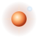

CLICK A REGION TO FILTER · DRAG TO ROTATE
STEP 1 OF 3 · MOOD
Tap a face, or press 1–5. Tap it again to clear it.
Drag the sliders or type the numbers from the cuff. Skip it if you did not measure today.
Before breakfast, from the glucose meter. Skip it if you did not measure today.
Leave anything empty if you did not measure it today.